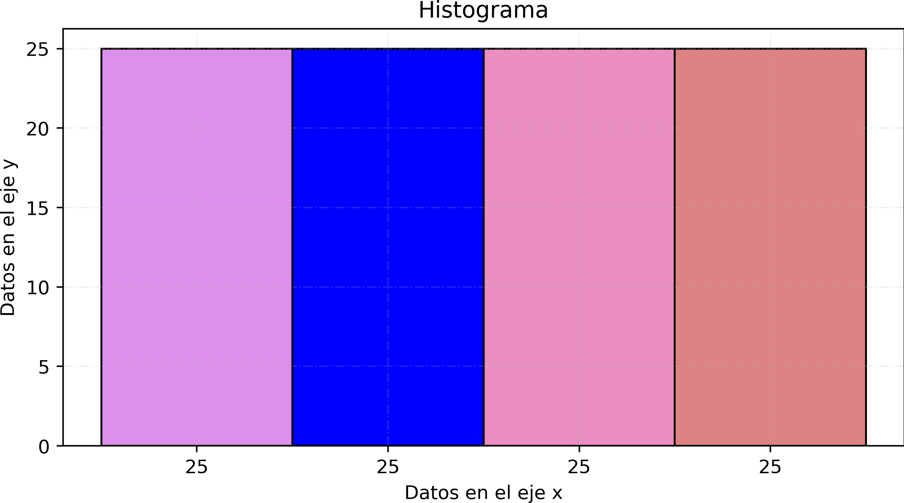
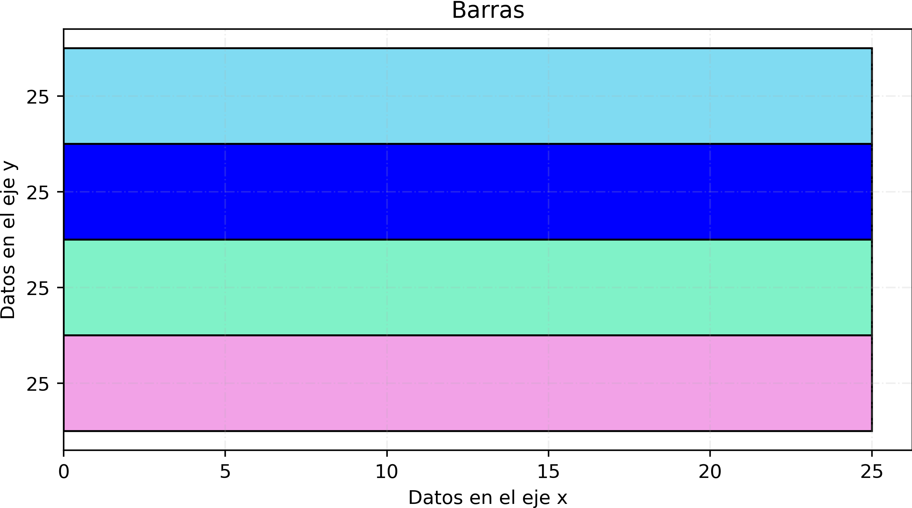
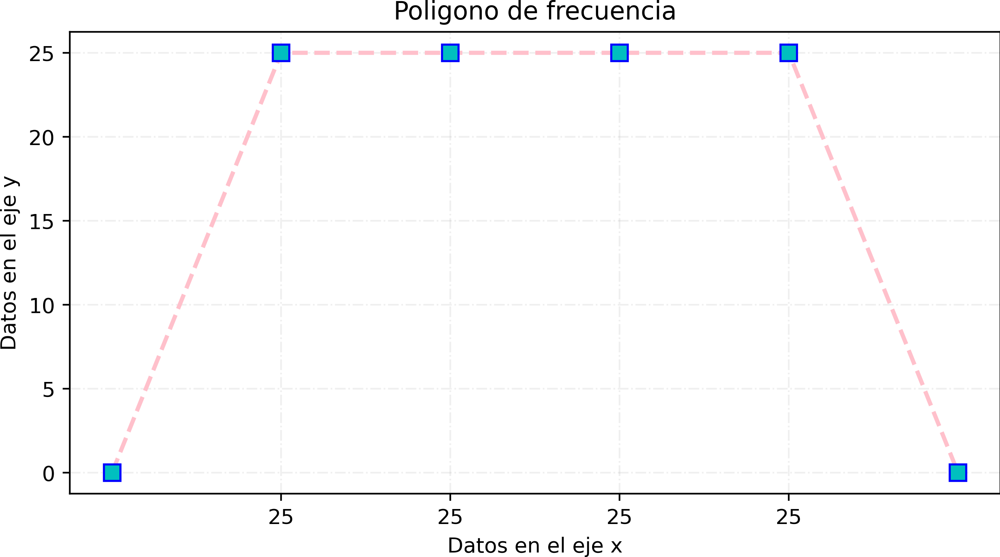
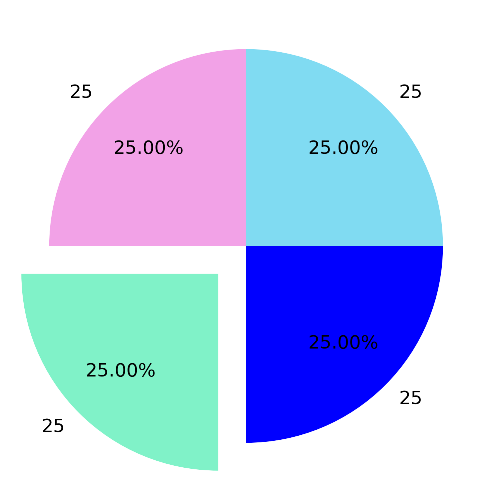

Tablas de Frecuencia (100 datos)
1. Variable Cualitativa
Descripción: Medio de transporte usado por 100 estudiantes.
Datos desordenados:
Auto, Camión, Bicicleta, Caminando, Auto, Camión, Caminando, Bicicleta, Auto, Camión,
Bicicleta, Caminando, Auto, Camión, Caminando, Bicicleta, Auto, Camión, Bicicleta, Caminando,
Auto, Camión, Caminando, Bicicleta, Auto, Camión, Caminando, Bicicleta, Auto, Camión,
Bicicleta, Caminando, Auto, Camión, Caminando, Bicicleta, Auto, Camión, Bicicleta, Caminando,
Auto, Camión, Caminando, Bicicleta, Auto, Camión, Caminando, Bicicleta, Auto, Camión,
Bicicleta, Caminando, Auto, Camión, Caminando, Bicicleta, Auto, Camión, Bicicleta, Caminando,
Auto, Camión, Caminando, Bicicleta, Auto, Camión, Caminando, Bicicleta, Auto, Camión,
Bicicleta, Caminando, Auto, Camión, Caminando, Bicicleta, Auto, Camión, Bicicleta, Caminando,
Auto, Camión, Caminando, Bicicleta, Auto, Camión, Caminando, Bicicleta, Auto, Camión
Datos ordenados:
Auto, Auto, Auto, Auto, Auto, Auto, Auto, Auto, Auto, Auto, Auto, Auto, Auto, Auto, Auto, Auto, Auto, Auto, Auto, Auto, Auto, Auto, Auto, Auto, Auto,
Bicicleta, Bicicleta, Bicicleta, Bicicleta, Bicicleta, Bicicleta, Bicicleta, Bicicleta, Bicicleta, Bicicleta, Bicicleta, Bicicleta, Bicicleta, Bicicleta, Bicicleta, Bicicleta, Bicicleta, Bicicleta, Bicicleta, Bicicleta, Bicicleta, Bicicleta, Bicicleta, Bicicleta, Bicicleta,
Caminando, Caminando, Caminando, Caminando, Caminando, Caminando, Caminando, Caminando, Caminando, Caminando, Caminando, Caminando, Caminando, Caminando, Caminando, Caminando, Caminando, Caminando, Caminando, Caminando, Caminando, Caminando, Caminando, Caminando, Caminando,
Camión, Camión, Camión, Camión, Camión, Camión, Camión, Camión, Camión, Camión, Camión, Camión, Camión, Camión, Camión, Camión, Camión, Camión, Camión, Camión, Camión, Camión, Camión, Camión, Camión,
(25) Auto
(25) Bicicleta
(25) Caminando
(25) Camión
| Transporte |
Frecuencia |
FA |
FR |
| Auto | 25 | 25 | 0.25 |
| Bicicleta | 25 | 50 | 0.25 |
| Caminando | 25 | 75 | 0.25 |
| Camión | 25 | 100 | 0.25 |
| Total | 100 | 100 | 1.00 |
|---|
Graficas de Variable Cualitativa





2. Variable Cuantitativa Discreta
Descripción: Número de hermanos de 100 alumnos.
Datos desordenados:
2,1,0,3,1,2,4,0,2,1, 3,2,1,0,4,2,1,3,0,2,
1,4,2,0,3,1,2,4,0,1, 3,2,1,0,4,2,1,3,0,2,
1,4,2,0,3,1,2,4,0,1, 3,2,1,0,4,2,1,3,0,2,
1,4,2,0,3,1,2,4,0,1, 3,2,1,0,4,2,1,3,0,2,
1,4,2,0,3,1,2,4,0,1, 3,2,1,0,4,2,1,3,0,2
Datos ordenados:
0,0,0,0,0,0,0,0,0,0, 0,0,0,0,0,0,0,0,0,0,
1,1,1,1,1,1,1,1,1,1, 1,1,1,1,1,1,1,1,1,1,
2,2,2,2,2,2,2,2,2,2, 2,2,2,2,2,2,2,2,2,2,
3,3,3,3,3,3,3,3,3,3, 3,3,3,3,3,3,3,3,3,3,
4,4,4,4,4,4,4,4,4,4, 4,4,4,4,4,4,4,4,4,4,
20 valores de 0
20 valores de 1
20 valores de 2
20 valores de 3
20 valores de 4
| Hermanos |
Frecuencia |
FA |
FR |
| 0 | 20 | 20 | 0.20 |
| 1 | 20 | 40 | 0.20 |
| 2 | 20 | 60 | 0.20 |
| 3 | 20 | 80 | 0.20 |
| 4 | 20 | 100 | 0.20 |
| Total | 100 | 100 | 1.00 |
|---|
Graficas de Variable Cuantitativa Discreta
3. Variable Cuantitativa Continua
Descripción: Tiempo (minutos) que tardan 100 personas en llegar al trabajo.
Datos desordenados:
35.4,22.1,48.6,60.2,15.3,72.4,55.1,40.6,18.9,30.0,
25.0,45.6,50.0,27.1,33.1,70.1,65.9,28.6,90.1,80.2,
41.3,52.1,31.2,47.8,64.4,36.0,59.6,21.7,49.1,75.6,
85.8,62.1,38.2,54.3,20.2,44.1,58.9,68.5,77.9,95.8,
24.2,29.4,34.8,63.8,73.2,82.1,92.4,26.4,39.9,56.8,
61.5,71.6,81.5,91.2,16.2,17.4,18.1,19.6,23.5,32.5,
42.7,46.2,51.4,57.4,66.2,74.8,78.4,83.6,88.3,93.6,
37.6,43.5,53.6,67.8,76.1,84.2,89.6,94.1,96.4,97.9,
98.2,99.1,100.0,86.4,87.9,69.4,79.6,60.0,55.0,45.0
Datos ordenados:
15.3,16.2,17.4,18.1,18.9,19.6,20.2,21.7,22.1,23.5,
24.2,25.0,26.4,27.1,28.6,29.4,30.0,31.2,32.5,33.1,
34.8,35.4,36.0,37.6,38.2,39.9,40.6,41.3,42.7,43.5,
44.1,45.0,45.6,46.2,47.8,48.6,49.1,50.0,51.4,52.1,
53.6,54.3,55.0,55.1,56.8,57.4,58.9,59.6,60.0,60.2,
61.5,62.1,63.8,64.4,65.9,66.2,67.8,68.5,69.4,70.1,
71.6,72.4,73.2,74.8,75.6,76.1,77.9,78.4,79.6,80.2,
81.5,82.1,83.6,84.2,85.8,86.4,87.9,88.3,89.6,90.1,
91.2,92.4,93.6,94.1,95.8,96.4,97.9,98.2,99.1,100.0
| Intervalo |
Frecuencia |
FA |
FR |
| 15 – 25 | 12 | 12 | 0.12 |
| 26 – 35 | 14 | 26 | 0.14 |
| 36 – 45 | 15 | 41 | 0.15 |
| 46 – 55 | 16 | 57 | 0.16 |
| 56 – 65 | 14 | 71 | 0.14 |
| 66 – 75 | 11 | 82 | 0.11 |
| 76 – 85 | 9 | 91 | 0.09 |
| 86 – 95 | 7 | 98 | 0.07 |
| 96 – 105 | 2 | 100 | 0.02 |
| Total | 100 | 100 | 1.00 |
|---|
Graficas de Variable Cuantitativa Continua